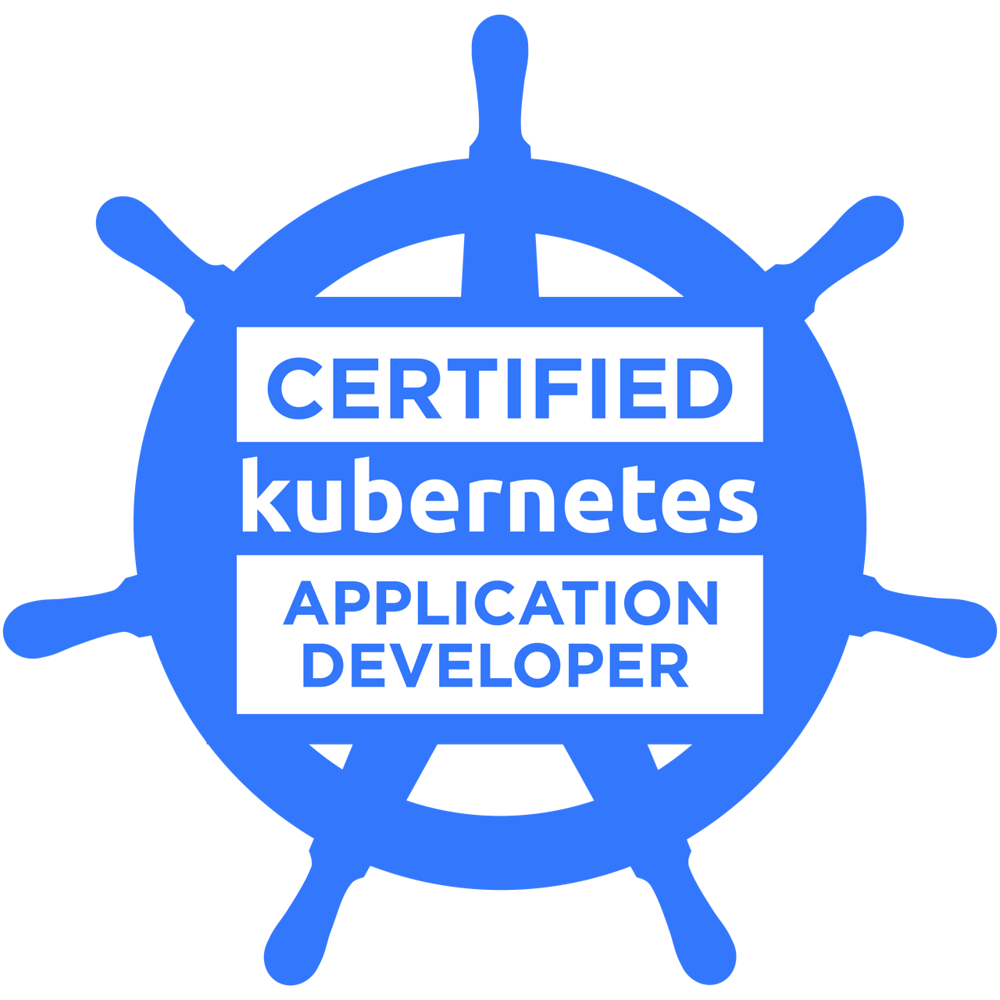
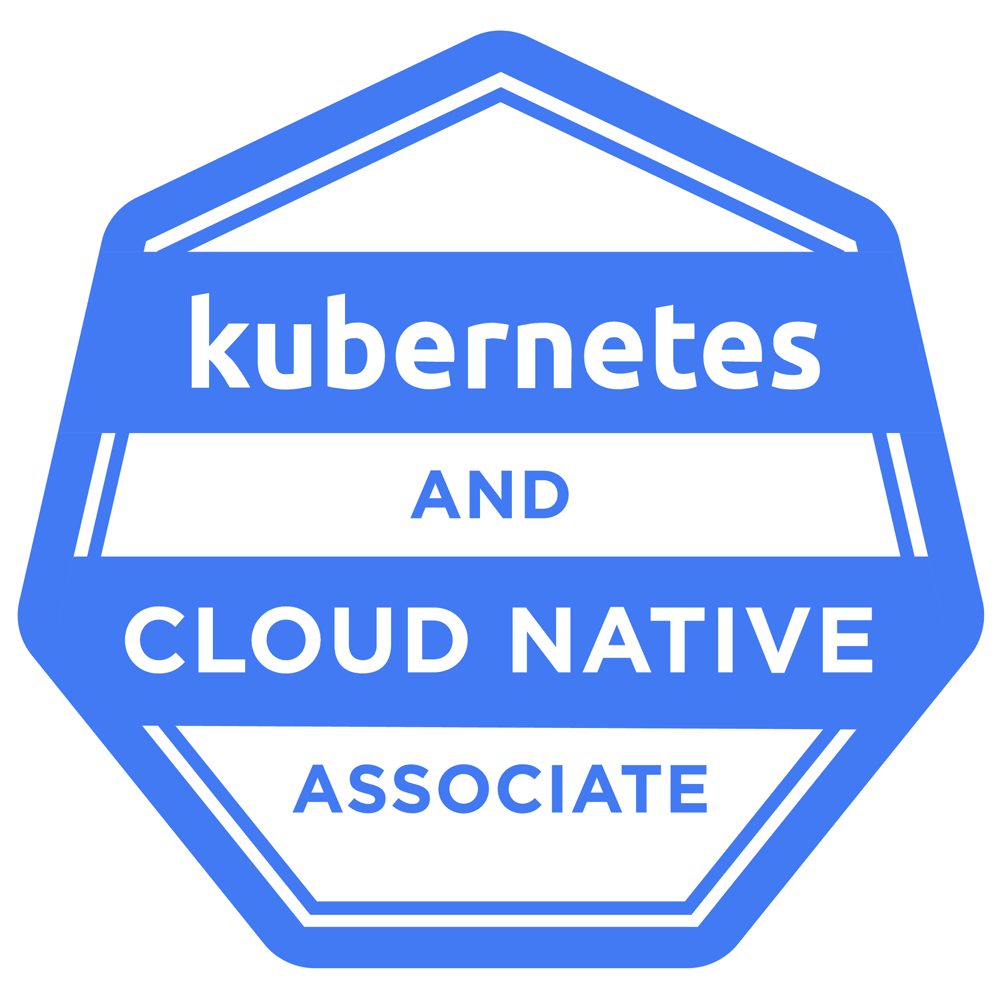

Architecture and Platform Design
Designed the complete architecture for a next-generation Jaeger demo on Oracle Kubernetes Engine, integrating OpenTelemetry demo services, Jaeger collector, and OpenSearch for scalable trace analytics.
DevOps Engineer | SRE | Cloud Native
I am a CNCF LFX Mentee and contributor with hands-on experience in Kubernetes, Go microservices, distributed tracing, and CI/CD automation across cloud-native environments.
Professional Summary
I focus on real-world platform engineering outcomes: resilient Kubernetes operations, secure service communication, automated delivery pipelines, and observability that helps teams detect and resolve incidents faster. I enjoy building systems that are easy to operate, hard to break, and straightforward to improve.
LFX Mentorship
LFX Mentee | CNCF | Remote | Mar 2025 to Jun 2025
Designed the complete architecture for a next-generation Jaeger demo on Oracle Kubernetes Engine, integrating OpenTelemetry demo services, Jaeger collector, and OpenSearch for scalable trace analytics.
Set up OCI/OKE cluster automation with Helm and Kustomize, then configured ingress, networking, and service communication patterns for stable deployments.
Integrated OpenTelemetry Collector for OTLP traffic and deployed Jaeger plus OpenSearch for trace storage and query performance at scale.
Implemented token loader and improved HTTP auth transport to support Bearer, Basic Auth, and API key schemes, improving secure OTel integration used by 5000+ organizations.
Projects
Monitoring
Built a monitoring setup with custom Go exporters, Prometheus alerts, and Grafana dashboards. This reduced incident detection time by 40%.
Backend Engineering
Designed gRPC and REST APIs in Go with connection pooling and query optimization to improve throughput and reliability for service-to-service workflows.
CI/CD Automation
Built GitHub Actions workflows and infrastructure-as-code practices for consistent deployments across environments with safer release operations.
Certifications and Badges

Certified Kubernetes Application Developer

Kubernetes and Cloud Native Associate
LFX mentorship details are highlighted in the Experience section.
Community and Leadership
Blog
This website now has a dedicated blog area where I share experiences, project breakdowns, hackathons, and events I attend.
Mentorship
Architecture, observability stack, and open-source contribution highlights.
Certification Journey
Study method, lab practice, and real-world reinforcement strategies.
Events and Community
Lessons from building, presenting, and collaborating in public tech spaces.
Contact